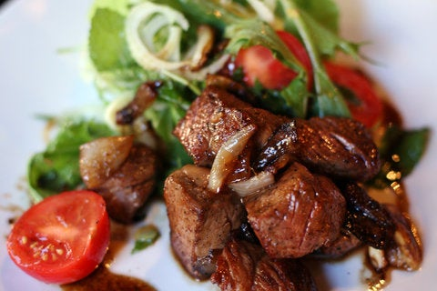

Bo Luc Lac (Shaking Beef)

Ingredients:
For the Marinade
- 2 pounds boneless beef sirloin, fillet, or rib eye, cut into 1-inch cubes
- 10 garic cloves, minced
- 1 tablespoon Maggi seasoning or soy sauce
- 1 tablespoon sugar
- 1 teaspoon sea salt
- Freshly ground black pepper
For the Salad
- 1 medium red onion, cut into paper-thin strips
- 7 garlic cloves, minced
- 2 tablespoons sugar
- 1/2 teaspoon sea salt
- 1/4 cup rice vinegar or cider vinegar
- 1/4 cup extra virgin olive oil
- Freshly ground black pepper
- 1 head bibb or Boston lettuce, cored, leaves torn into large pieces
- 1 cup shaved fennel bulb
- 1 cup baby arugula
- 1/2 cup mint leaves
- 6 cherry tomatoes, halved
- 2 tablespoon vegetable oil
Steps:
For the Marinade
- In a bowl, combine beef, garlic, Maggi or soy sauce, sugar, salt and black pepper to taste. Let stand at room temperature for 1 hour.
For the Salad
- In a large serving bowl, combine onion, 2 minced garlic cloves, sugar, salt, vinegar, and olive oil.
Mix well, and season with black pepper to taste. Add lettuce, fennel, arugula, mint and tomatoes. Toss to mix.
- Preheat a large skillet over high heat, and add vegetable oil.
- Add remaining 5 cloves minced garlic
- Add half beef cubes and sear on all sides, shaking pan, until medium rare, about 1 minute. Reserve, then repeat with remaining beef
- Transfer beef to salad greens and toss, or serve salad and beef separtely
- Sprinkle with freshly ground black pepper
Recipe Refererence (New York Times Cooking)
Return to the main page